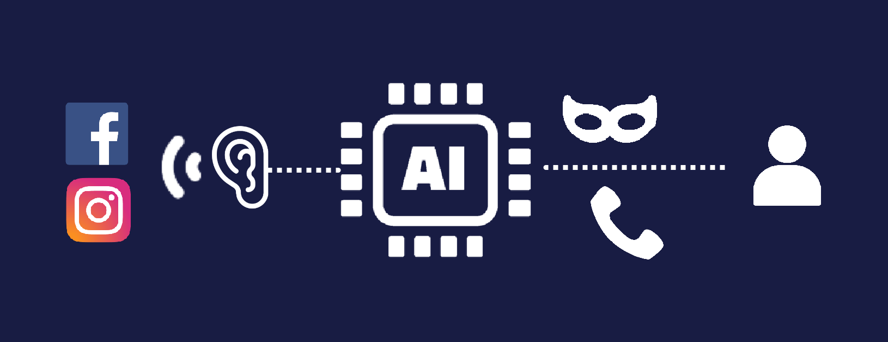

Hvordan svindlere kloner din stemme med AI.
Svindlere har i dag et avanceret system til at finde og klone personer online, primært via brug af offentlige tilgængelige ressourcer som sociale medier, arkiver, og lækkede data.
Svindlere bruger forskellige metoder, men ofte foregår det på denne måde:
Først indsamles der data og konstrueres en profil af den person, som AI'en skal efterligne. Dette kan f.eks. være en Facebook profil hvor den indsamler data som fødselsdage, familiemedlemmer, job, osv.
Til stemmekloning bruges der blandt andet videoer af personen, der taler på videoer på sociale medier eller optagelser fra tidligere spam-opkald.
Når AI'en har indsamlet disse data, begynder den at kontakte og svindle personens bekendte over SMS og telefon.

Ting der ikke kan beskytte dig:
- Det beskytter dig ikke at stole på dine ører. AI kan efterligne en stemme ud fra få sekunders lydklip fra sociale medier, videoer eller telefonsvarere. Selvom stemmen lyder præcis som din datter, chef eller bankrådgiver, kan du ikke være sikker på, hvem der ringer.
- Telefonnummeret, du ser på skærmen, kan være falsk. Svindlere kan nemt forfalske det (det kaldes spoofing), så det ser ud som om, at et opkald eller en sms kommer fra et nummer, du kender, uden at gøre det.
- Du kan ikke regne med at kunne høre forskel. Falske stemmer bliver bedre hele tiden, og når man er presset eller bange, opdager selv opmærksomme mennesker sjældent de små fejl.
- Personlige oplysninger gør ikke en besked ægte. Selvom den anden på linjen f.eks. kender dit navn, familie eller arbejdsplads, kan oplysningerne sagtens komme fra offentlige profiler eller lækkede data.
Ting der kan beskytte dig
- Får du en uventet anmodning om penge, koder eller hjælp, så læg på og ring selv tilbage. Ring til personen på et nummer, du allerede har gemt, og brug aldrig det nummer eller link, der står i beskeden.
- Aftal en sikkerhedssætning, som før beskrevet, med din familie. Ordet må aldrig stå online, og det skal være noget, en svindler ikke kan gætte.
- Sæt tempoet ned, når nogen presser dig. Svindel bygger næsten altid på hastværk som “Det skal ske nu” eller “Fortæl det ikke til nogen”, så jo mere en besked presser dig, jo større grund er der til at stoppe og tjekke den.
- Begræns, hvor meget af din stemme og dine data, der ligger online. Gør dine profiler på sociale medier private, hvor det er muligt, og overvej, hvor mange videoer og lydklip med din stemme der er offentlige. Jo mindre materiale der findes, jo sværere er det at lave en troværdig kopi.
Her er en tjekliste, som du kan bruge til at opfriske og tjekke din nuværende sikkerhed
- Jeg har aftalt et kodeord med min familie og mine nærmeste.
- Jeg har gemt de rigtige numre på familie, bank og arbejdsplads, så jeg selv kan ringe op.
- Jeg overfører aldrig penge og deler aldrig koder, MitID-oplysninger eller kortdata på grund af et opkald eller en besked alene.
- Mine profiler på sociale medier er sat til privat, og jeg har ryddet op i offentlige videoer og lydklip.
- Jeg har slået totrinsbekræftelse til på e-mail, bank og sociale medier.
- Jeg har talt med ældre familiemedlemmer om, hvordan svindlen foregår, og hvad de skal gøre.
- Jeg ved, hvordan jeg anmelder svindel til politiet og spærrer mit kort hos banken.